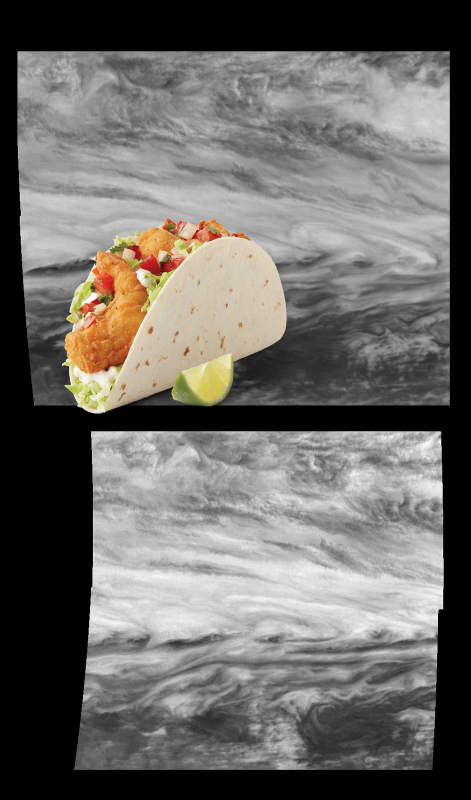

-
Something Strange, An Unexpected Discovery | Far Side of the Moon
-
A Mystery, An Unexpected Discovery – Hubble Sees a Dying Star's Final Moments.
-
An Unexpected Discovery @ Adding up Stars in a Galaxy
-
An Unexpected Discovery @ Soul Nebula!
-
An Unexpected Discovery, Something Strange – Seasonal Frost Changes on Mars!
-
An Unexpected Discovery on Hubble Sees the Force Awakening in a Newborn Star
-
A Mystery – History of Hubble Space Telescope (HST).
-
An Unexpected Discovery on Winds Near Jupiter Belt-Zone Boundary!
-
 Something Strange + Bright-Dark Terrain Boundary in stereo!
Something Strange + Bright-Dark Terrain Boundary in stereo! -
A Mystery, Something Strange | Mercury Globe: South Pole!
-
An Unexpected Discovery on New Horizons Sees Pluto Sept. 24.
-
An Unexpected Discovery + Galaxy Cluster IDCS J1426.
-
An Unexpected Discovery ; The Extended Region Around the Planetary Nebula NGC 3242